賦能
讓每份能力被看見
由個人的累積成為團隊的支持，肯定持續投入的專業與心意。

表揚不只是記錄成績，也是在看見每一段投入背後的累積。 團隊的學習、服務與陪伴被再次凝聚，成為持續前進的力量。
Past Recognition Moments
從每一次相聚、表揚與見證中，累積成團隊持續前進的力量。


賦能
由個人的累積成為團隊的支持，肯定持續投入的專業與心意。
創勢
在服務與學習中形成正向動能，讓成果能被傳承、被延伸。
馳騁
從榮耀時刻再出發，攜手拓展下一次成就的視野與高度。
從公益參與到家庭聚會，每一次同行都來自夥伴之間的信任與支持。 本次團隊表揚，記錄團隊在學習、互助與共同投入中的累積成果。
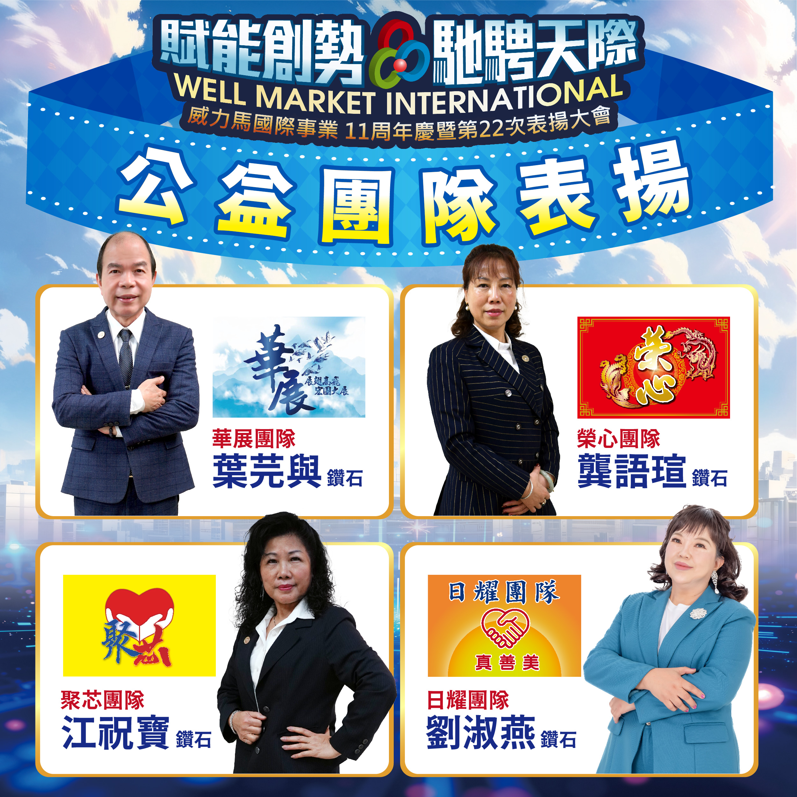
Public Welfare Team
感謝持續參與公益活動的團隊夥伴， 以長期投入與同心奉獻，延續威力馬愛與善的企業精神。
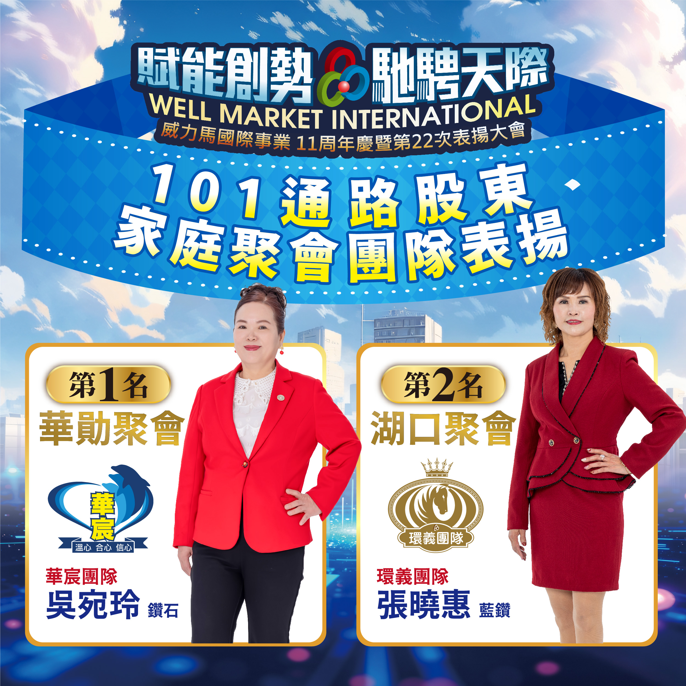
101 Shareholder Family Gathering
在專業學習與互助陪伴中持續前進， 透過家庭聚會凝聚信任，讓團隊力量穩定累積。
從數位學習、實境參與，到服務、推薦與績效累積， 每一項表揚都記錄著夥伴持續行動、穩定成長的軌跡。
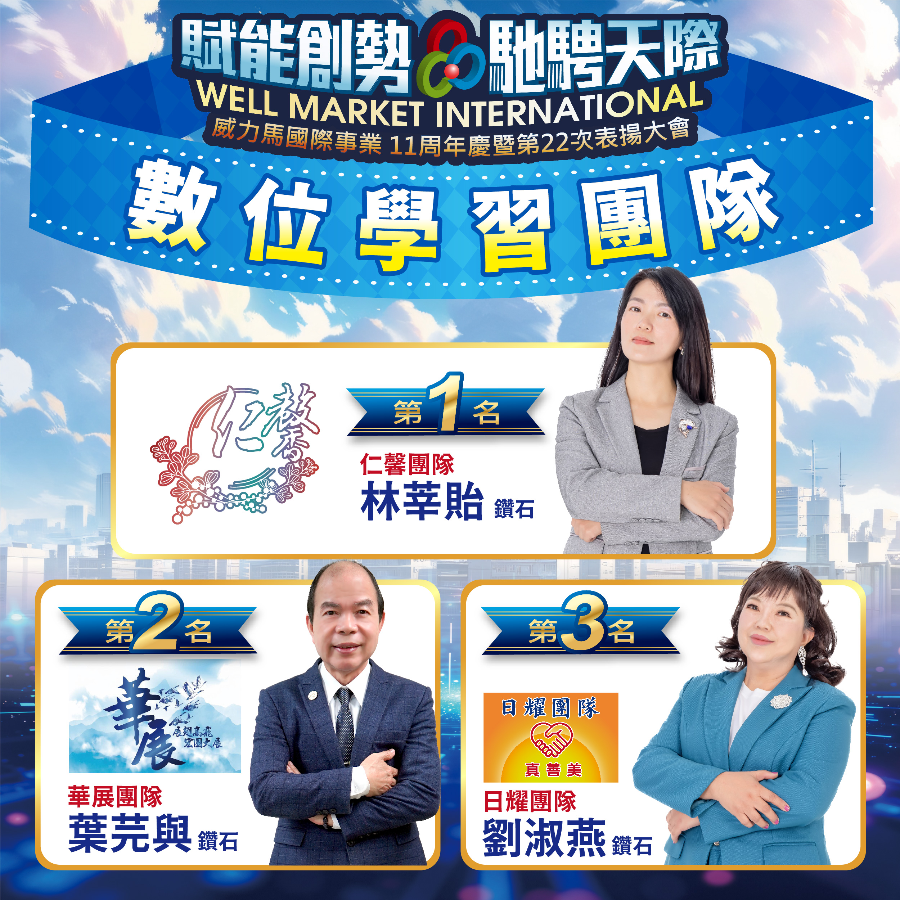
Digital Learning Team
表揚善用數位工具持續進修的團隊，讓學習不受時間與距離限制， 在日常節奏中穩定累積成長能量。
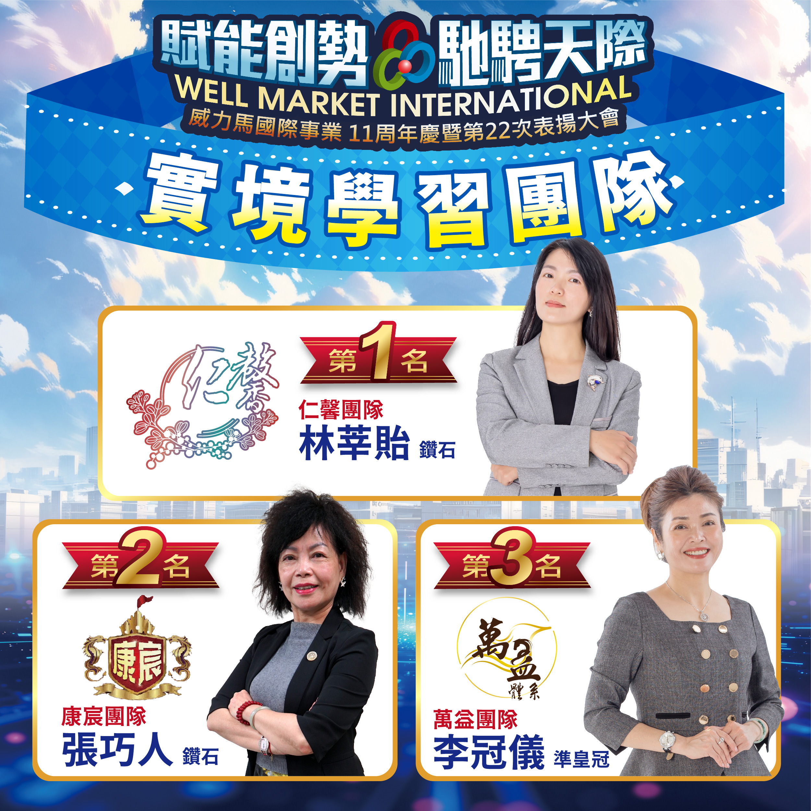
Reality Learning Team
表揚在實體課程與現場學習中持續參與的團隊， 將知識轉化為行動，讓每一次到場都成為前進的累積。
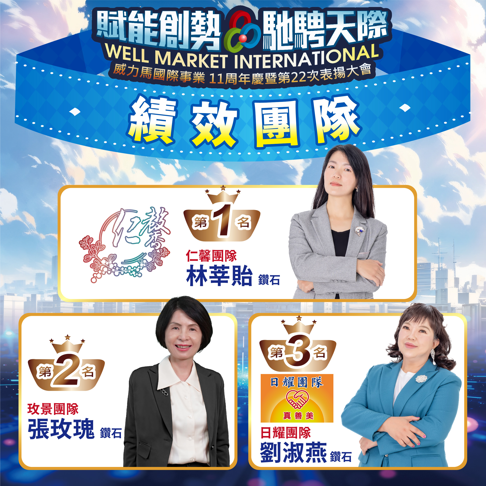
Performance Team
表揚在目標執行與團隊推進中展現成果的團隊， 以穩定行動累積績效，也讓努力被具體看見。
Referral Team
表揚願意主動分享、帶動更多夥伴同行的團隊， 讓信任在一次次推薦中延伸，也讓影響力持續擴大。
VIP Service Team
表揚在服務互動中用心陪伴、穩定回應的團隊， 讓每一次服務都成為關係經營與信任累積的開始。
Team of the Year
年度最佳團隊，是本次表揚中最具代表性的團隊榮耀。 它不只象徵成果，更代表團隊在學習、服務、推薦與執行中的全面累積。
鑽石授證，是對夥伴長期投入、穩定經營與團隊陪伴的肯定。 這一刻不只是個人的榮耀，也代表團隊共同走過的累積與信任。
DIAMOND
這份鑽石榮耀，來自長期投入與團隊同行的累積。 她與夥伴彼此扶持、持續突破，讓每一步努力都成為被看見的成果。
DIAMOND
從抗拒到相信，她在威力馬看見真誠、學習與陪伴的力量。 這份鑽石榮耀，來自一群人彼此支持、共同走穩的結果。
DIAMOND
從家庭主婦到鑽石舞台，她以決心與行動完成改變。 這份榮耀，見證她帶著夥伴一起成長、一起看見希望。
12 位激密之星以形象拍攝率先亮相。 在正式結果揭曉之前，先記錄每一位站上舞台前的自信、準備與光芒。
WELL AGE STAR Finalists
聚光燈之前，是每一位激密之星的自信亮相。 本區先以形象主視覺記錄決選前的準備時刻， 最終名次將於活動紀錄中完整揭曉。

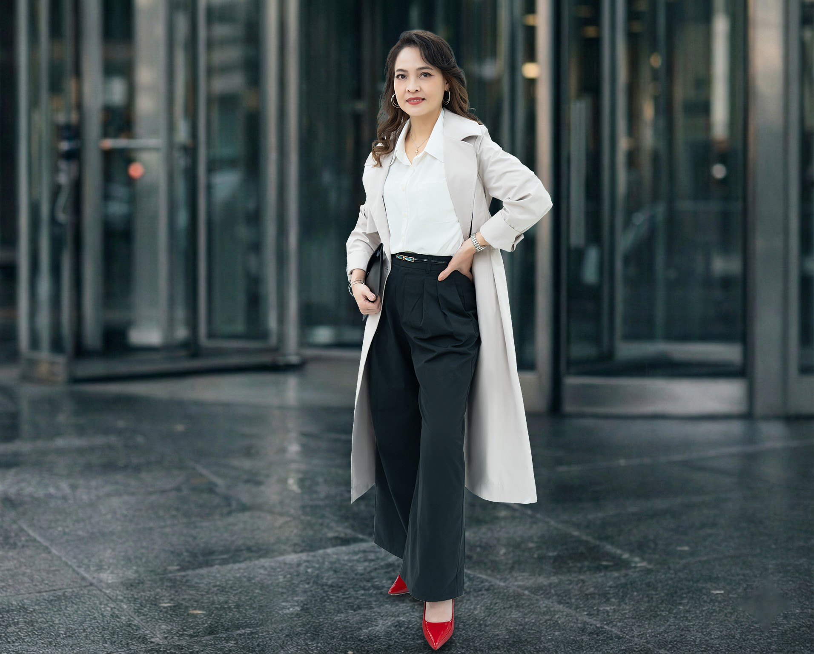
陳諭葳
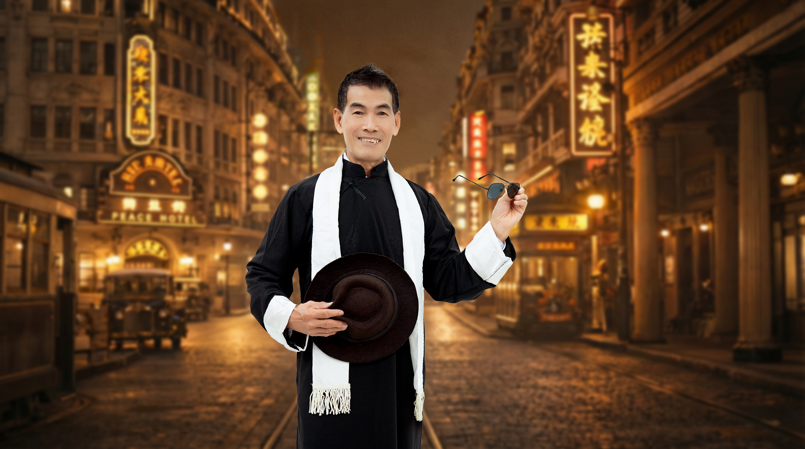
吳哲村
應海珠
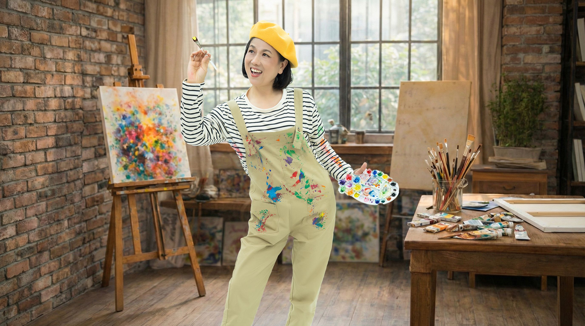
林愛呈
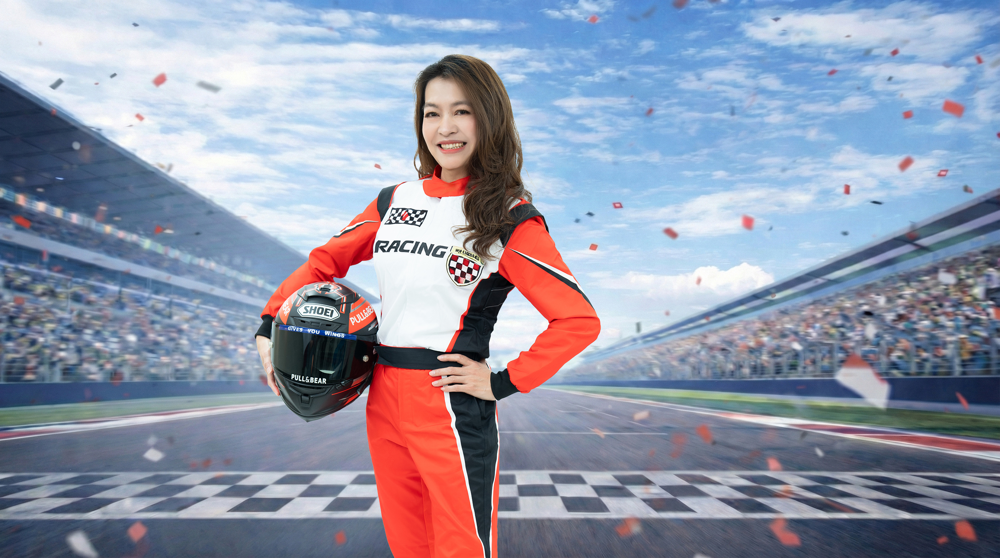
楊玉華
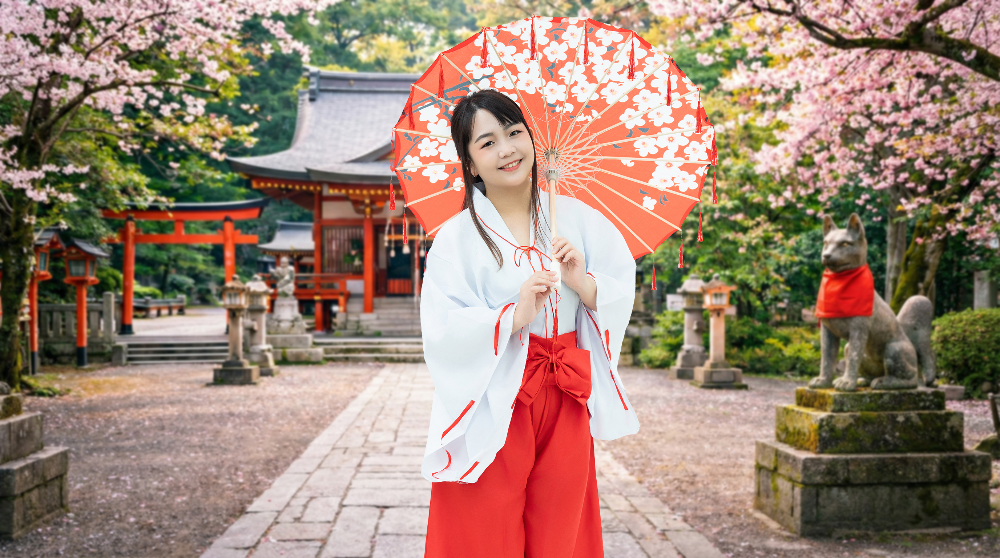
王羿淇
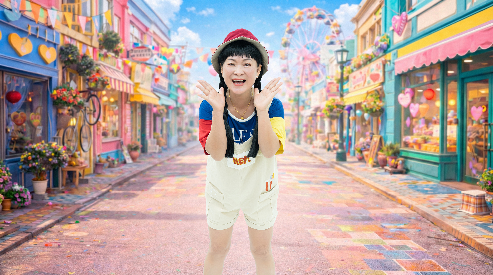
葉招治
蘇榮華
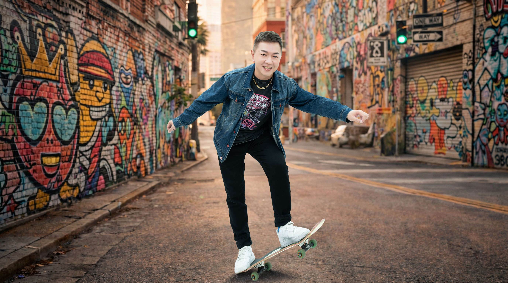
邱聖淵
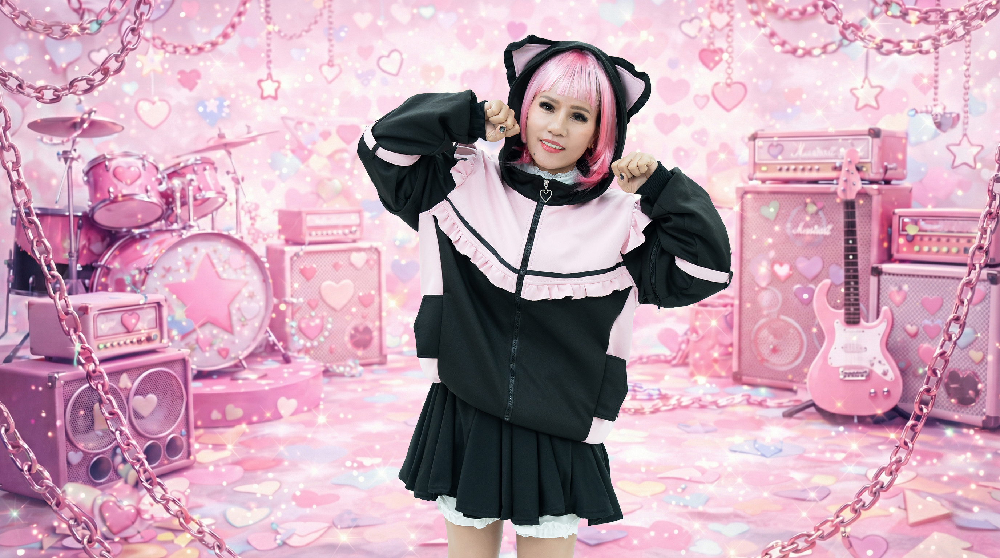
阮詩翃
陳聰碧
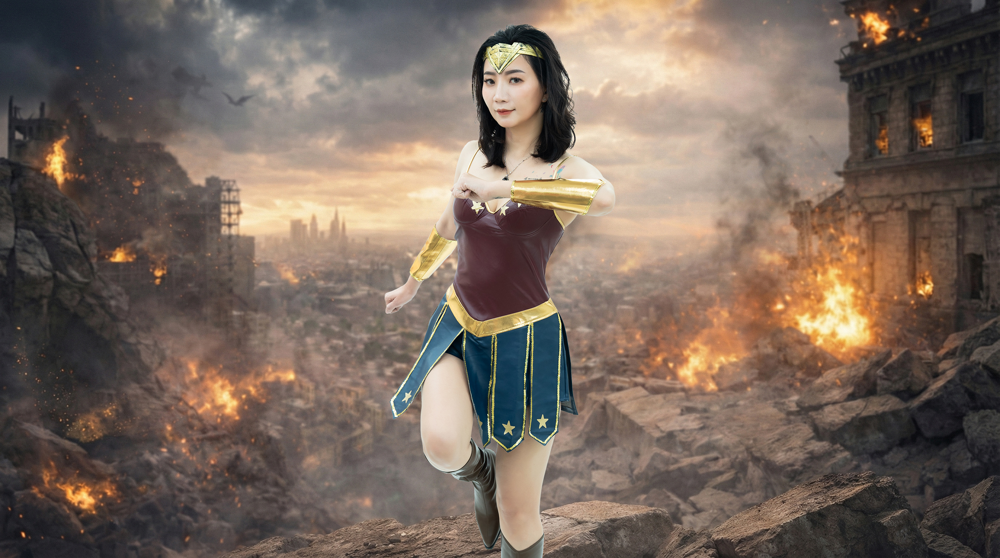
黃孟蓁
透過影像重溫大會現場與授證致詞。片源將於正式發布時置換上線。
以雜誌式編排收納現場的主視覺、表揚、授證、決選、合影與舞台花絮。